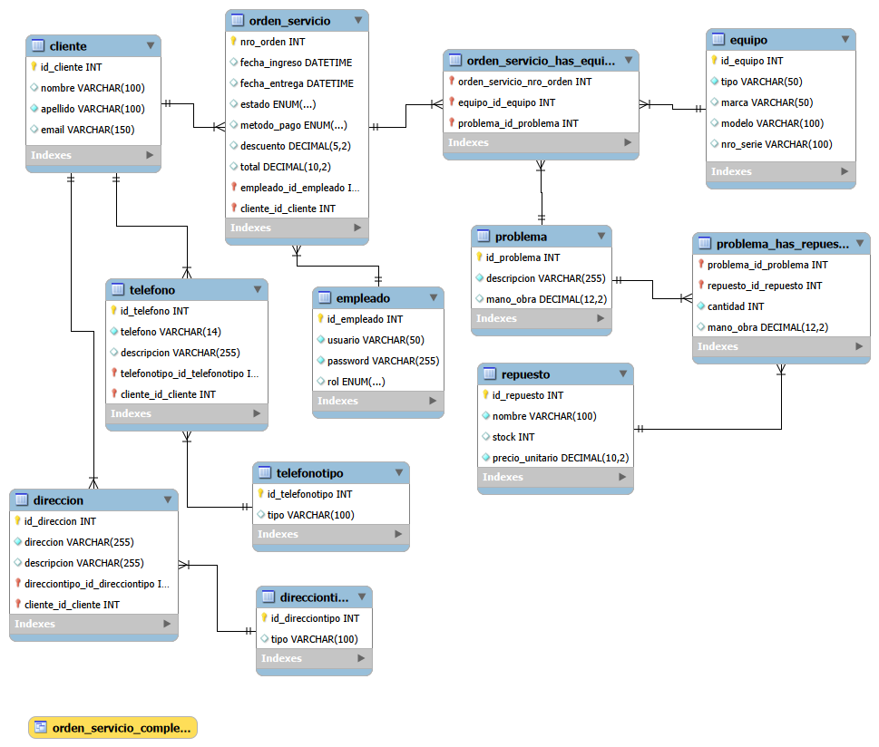

01
Conjuntos funcionales del lenguaje SQL
- DDL
- Data Definition Language - Lenguaje de Definición de Datos
- Estructura
- DML
- Data Manipulation Language - Lenguaje de Manipulación de Datos
- Datos
- DQL
- Data Query Language - Lenguaje de Consulta de Datos
- Consultas
- DCL
- Data Control Language - Lenguaje de Control de Datos
- Permisos
- TCL
- Transaction Control Language - Lenguaje de Control de Transacciones
- Transacciones
02
DDL — Lenguaje de Definición de Datos:
- Define, modifica o elimina la estructura de los objetos de la base de datos (tablas, índices, usuarios).
- Comandos:
- CREATE (crear)
- ALTER (modificar)
- DROP (eliminar)
- TRUNCATE (vaciar tabla)
03
DML — Lenguaje de Manipulación de Datos:
- Gestiona los datos dentro de las tablas existentes, permitiendo insertar, actualizar o eliminar registros.
- Comandos:
- INSERT (insertar)
- UPDATE (actualizar)
- DELETE (borrar)
04
DQL — Lenguaje de Consulta de Datos:
- Utilizado exclusivamente para realizar consultas y recuperar datos específicos de la base de datos.
- Comandos:
- SELECT (seleccionar datos)
05
DCL — Lenguaje de Control de Datos:
- Gestiona la seguridad y los permisos de acceso a los datos.
- Comandos:
- GRANT (otorgar permisos)
- REVOKE (quitar permisos)
06
TCL — Lenguaje de Control de Transacciones:
- Gestiona los cambios realizados por las sentencias DML para garantizar la integridad de los datos.
- Comandos:
- COMMIT (confirmar cambios)
- ROLLBACK (revertir cambios)
- SAVEPOINT (punto de guardado)
07
Un Ejemplo
08
Presentación del problema Sin normalización
En el diseño, el nombre del tipo (ej: "Celular") está en la tabla equipo.
¿No sería óptimo crear la tabla equipotipo?
Que pasa si mañana quisiéramos ...

09
¡¡¡Trabajemos!!! Normalizando…
- Pasar de un atributo simple a una tabla maestra.
- Para realizar esta normalización, la secuencia lógica es:
1ero - Crear la tabla
4to - Limpiar la tabla inicial
2do - Migrar los datos
3ero - Vincular los registros (PK <-> FK)
10
Crear la tabla de tipo de equipo
- CREATE TABLE IF NOT EXISTS `el_chip`.`equipotipo` (
- `id_equipotipo` INT NOT NULL AUTO_INCREMENT,
- `nombre` VARCHAR(50) NOT NULL,
- PRIMARY KEY (`id_equipotipo`),
- UNIQUE INDEX `nombre_UNIQUE` (`nombre` ASC)
- ) ENGINE = InnoDB;
11
Poblar la tabla equipotipo
- INSERT INTO `el_chip`.`equipotipo` (nombre)
- SELECT DISTINCT tipo FROM `el_chip`.`equipo`;
12
Modificar la tabla equipo
- ALTER TABLE `el_chip`.`equipo`
- ADD COLUMN `id_equipotipo` INT NULL AFTER `id_equipo`;
13
Migrar los datos (El "Match")
- UPDATE `el_chip`.`equipo` e
- JOIN `el_chip`.`equipotipo` et ON e.tipo = et.nombre
- SET e.id_equipotipo = et.id_equipotipo;
14
Establecer la restricción de Integridad Referencial
- ALTER TABLE `el_chip`.`equipo`
- MODIFY COLUMN `id_equipotipo` INT NOT NULL,
- ADD CONSTRAINT `fk_equipo_equipotipo`
- FOREIGN KEY (`id_equipotipo`)
- REFERENCES `el_chip`.`equipotipo` (`id_equipotipo`)
- ON DELETE NO ACTION
- ON UPDATE NO ACTION;
15
Limpieza final
ALTER TABLE `el_chip`.`equipo` DROP COLUMN `tipo`;
16
Diapositiva 16